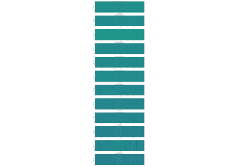
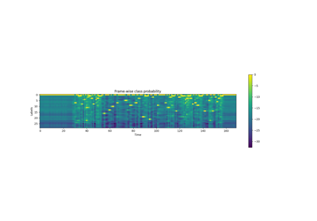

Wav2Vec2ASRBundle¶
- class torchaudio.pipelines.Wav2Vec2ASRBundle[source]¶
Data class that bundles associated information to use pretrained
Wav2Vec2Model.This class provides interfaces for instantiating the pretrained model along with the information necessary to retrieve pretrained weights and additional data to be used with the model.
Torchaudio library instantiates objects of this class, each of which represents a different pretrained model. Client code should access pretrained models via these instances.
Please see below for the usage and the available values.
- Example - ASR
>>> import torchaudio >>> >>> bundle = torchaudio.pipelines.HUBERT_ASR_LARGE >>> >>> # Build the model and load pretrained weight. >>> model = bundle.get_model() Downloading: 100%|███████████████████████████████| 1.18G/1.18G [00:17<00:00, 73.8MB/s] >>> >>> # Check the corresponding labels of the output. >>> labels = bundle.get_labels() >>> print(labels) ('-', '|', 'E', 'T', 'A', 'O', 'N', 'I', 'H', 'S', 'R', 'D', 'L', 'U', 'M', 'W', 'C', 'F', 'G', 'Y', 'P', 'B', 'V', 'K', "'", 'X', 'J', 'Q', 'Z') >>> >>> # Resample audio to the expected sampling rate >>> waveform = torchaudio.functional.resample(waveform, sample_rate, bundle.sample_rate) >>> >>> # Infer the label probability distribution >>> emissions, _ = model(waveform) >>> >>> # Pass emission to decoder >>> # `ctc_decode` is for illustration purpose only >>> transcripts = ctc_decode(emissions, labels)
- Tutorials using
Wav2Vec2ASRBundle: - 
Speech Recognition with Wav2Vec2
Speech Recognition with Wav2Vec2Forced Alignment with Wav2Vec2
Forced Alignment with Wav2Vec2

sample_rate¶
get_labels¶
- Wav2Vec2ASRBundle.get_labels(*, blank: str = '-') Tuple[str][source]¶
The output class labels (only applicable to fine-tuned bundles)
The first is blank token, and it is customizable.
- Parameters
blank (str, optional) – Blank token. (default:
'-')- Returns
For models fine-tuned on ASR, returns the tuple of strings representing the output class labels.
- Return type
Tuple[str]
- Example
>>> import torchaudio >>> torchaudio.models.HUBERT_ASR_LARGE.get_labels() ('-', '|', 'E', 'T', 'A', 'O', 'N', 'I', 'H', 'S', 'R', 'D', 'L', 'U', 'M', 'W', 'C', 'F', 'G', 'Y', 'P', 'B', 'V', 'K', "'", 'X', 'J', 'Q', 'Z')
get_model¶
- Wav2Vec2ASRBundle.get_model(*, dl_kwargs=None) Wav2Vec2Model¶
Construct the model and load the pretrained weight.
The weight file is downloaded from the internet and cached with
torch.hub.load_state_dict_from_url()- Parameters
dl_kwargs (dictionary of keyword arguments) – Passed to
torch.hub.load_state_dict_from_url().